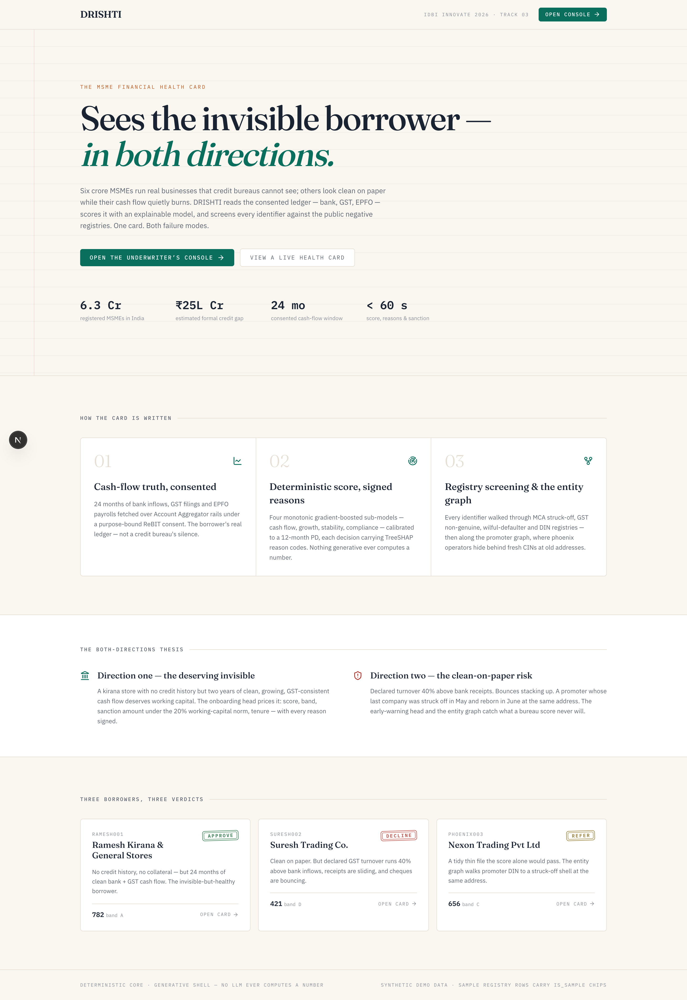
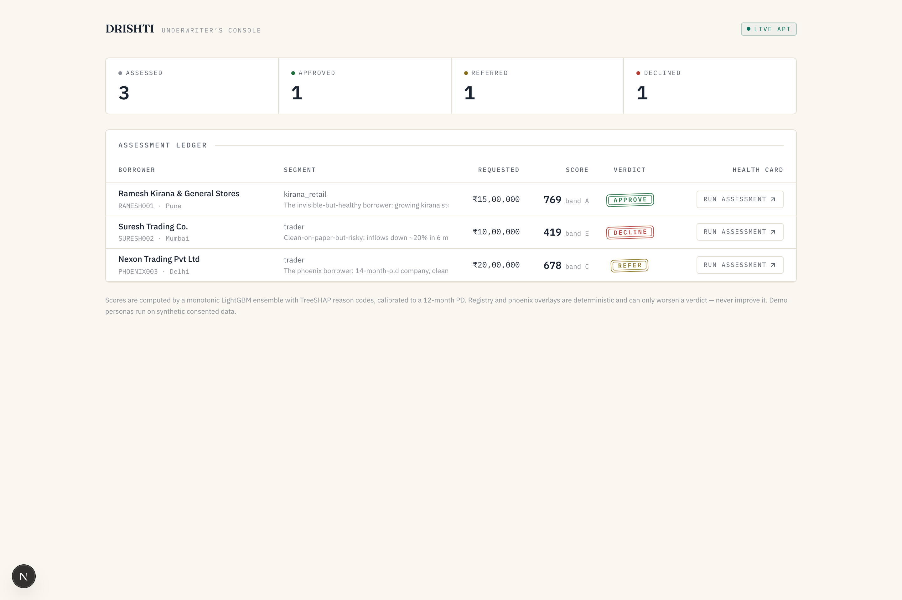
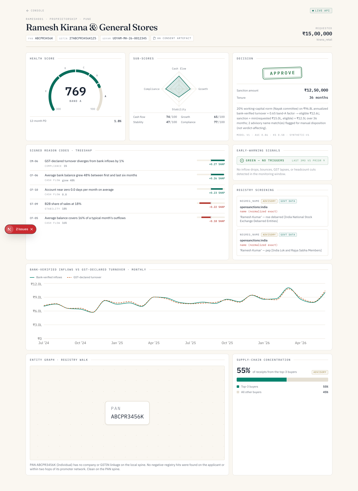
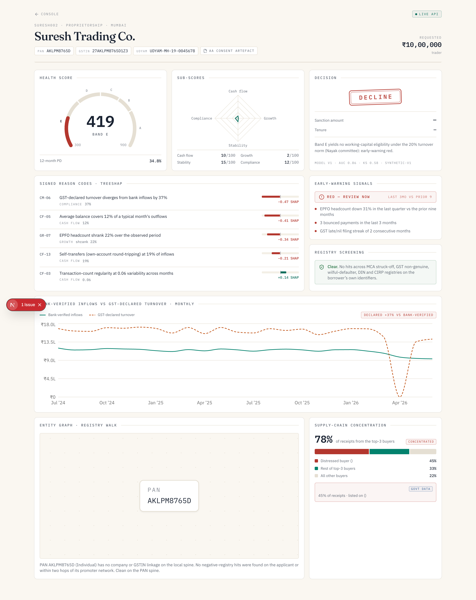
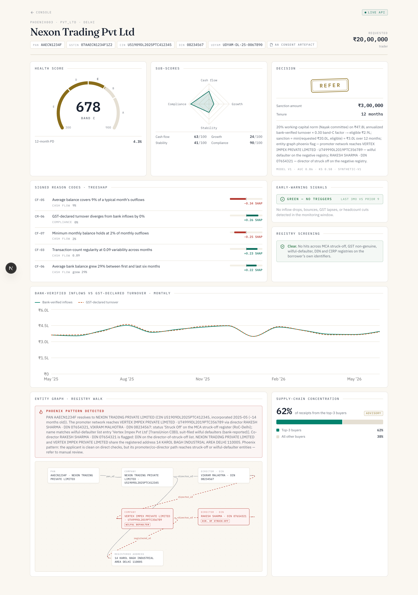

The MSME Financial Health Card: a digital shroff for the credit-invisible.
Alternate-data credit decisioning: reads a business's consented GST · UPI/bank (AA) · EPFO money-trail, scores it 300–900 with signed reasons, screens ~45,000 real government registry rows for phoenix fraud, and emits an OCEN 4.0 loan offer.
| Team name | SHROFF |
| Team leader | Anshuman Atrey |
| Problem statement | Problem Statement 3: Financial Health Score |
Millions of Indian MSMEs (kirana stores, small traders, tiny manufacturers) are new-to-credit: they run on cash and UPI and never kept formal books. Banks judge them on audited statements, ITR and a CIBIL score they simply don't have, so viable businesses are auto-rejected. Meanwhile, some borrowers who look clean on paper are quietly failing, and get through.
Why "Shroff"? The traditional Indian banker who judged merchants by cash-flow and conduct, never paperwork. This is that instinct, rebuilt from alternate data.
"Sees the invisible borrower, in both directions: approves the invisible-but-healthy, catches the looks-fine-but-failing, and refers the phoenix the score alone would have lent to."
| Persona | Story | Score | Verdict |
|---|---|---|---|
| Ramesh Kirana | No CIBIL; 24 months clean bank + GST cash-flow | 769 · A | APPROVE ₹12.5L @ 13.77% |
| Suresh Trading | GST declared ~37% above bank inflows; bounces, sliding receipts | 419 · E | DECLINE |
| Nexon Trading | Tidy thin file; promoter's network reaches a struck-off shell | 678 · C | REFER · phoenix graph |


is_sample chip: real vs honestly-labeled sample.| Layer | Stack | Why |
|---|---|---|
| Web console | Next.js (App Router, TypeScript) · Tailwind · Recharts · React Flow | Instant deploy link (Vercel); React Flow renders the entity graph natively |
| Scoring API | Python 3.12 · FastAPI · LightGBM (monotonic) · SHAP · scikit-learn | Monotone constraints = regulator-friendly; TreeSHAP = exact reason codes; <100 ms/score |
| Screening + graph | Stdlib SQLite + PAN-spine graph walk (same service) | Multi-key relational lookups (PAN/GSTIN/CIN/DIN joins); deterministic, zero extra infra |
| Data (PoC) | Synthetic parquet (8,000 MSMEs, seed 42) + ~45k real registry rows in-repo | Judge-proof: no network, no accounts, cold-clone reproducible |
| Rails | AA (ReBIT v2 consent artefacts) · OCEN 4.0 offer schema · ULI adapter seam | Track 03 asks for ULI/OCEN/AA integration; honest status per adapter |
| Hosting | Vercel (web) · Render (API), free tier | Live deployment link for judging: shroff.onrender.com |
Same pipeline, different plugs: Supabase Postgres for consent logs & portfolio persistence · AA FIU-module live connection · retrain + recalibrate on IDBI sandbox portfolio outcomes · optional LLM narrative stays env-gated at the edge.
| Item | Pilot (~5k assessments/yr) | Scale (~100k/yr) |
|---|---|---|
| Cloud infra (API + web + Postgres) | ₹1–2 L | ₹8–15 L |
| AA data-pull fees (per-consent, market ₹5–25) | ₹0.5–1.5 L | ₹10–25 L |
| Registry/data subscriptions (MCA bulk, watchlists) | ₹1–3 L | ₹3–6 L |
| MLOps: monitoring, retraining, model validation | ₹2–4 L | ₹6–12 L |
| Total (ex-manpower) | ₹5–10 L | ₹27–58 L |
Per-decision cost at scale: ~₹30–60. Against the margin on a single healthy ₹12.5L working-capital loan, the system pays for itself within the first few hundred approvals it makes possible.



| Band | n | Score range | Default rate |
|---|---|---|---|
| A | 637 | 751–900 | 1.26% |
| B | 26 | 689 | 3.85% |
| C | 436 | 660–678 | 4.36% |
| D | 199 | 542–578 | 11.56% |
| E | 302 | 300–483 | 37.42% |
Persistent navigation shell (Portfolio · Live demo) replaces a single scrolling page; the health card itself is now tabbed — Overview · Model & Score · Cash flow / GST · Screening & Graph · Supply chain / Rail — so a reviewer finds any one signal in one click instead of scrolling the whole file.
github.com/AnshumanAtrey/shroff
MIT-licensed · cold-clone runbook in RUN.md · reproducible pipeline (seed 42)
shroff.vercel.app
Underwriter console · LIVE API chip when connected to the scoring service
shroff.onrender.com/api/health
POST /api/score · GET /api/screen · /api/graph/{pan} · /api/ocen/offer/{id}
loom.com/share/e0a3c715e5bf499a968a030774963232
The 3-persona walkthrough: Ramesh (approve) · Suresh (decline) · Nexon (phoenix refer)
curl -X POST https://shroff.onrender.com/api/score -H 'Content-Type: application/json' -d '{"msme_id":"PHOENIX003"}'
→ score 678 · band C · REFER, with the struck-off shell named in the rationale.
"The shroff never asked a merchant for paperwork.
He watched how the money moved."
SHROFF: approve the invisible-but-healthy · catch the looks-fine-but-failing · refer the phoenix.
Thank you · Anshuman Atrey · IDBI Innovate 2026 · Track 03